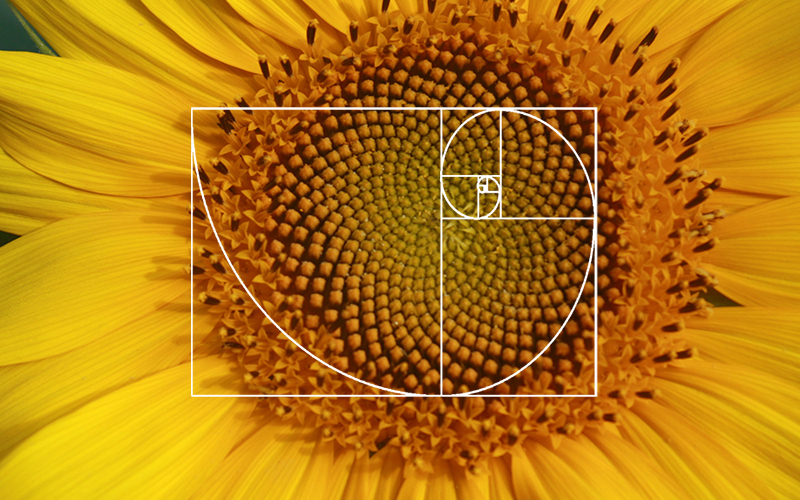

The Hidden Mathematics in Nature
The golden ratio can be seen everywhere in the world around us. The Sunflower is a perfect example of math in nature.

Look at a sunflower head. Notice how the spiral matches with the sunflower seeds perfectly. You can see these spirals everywhere in nature.
Those are consecutive Fibonacci numbers: 1, 1, 2, 3, 5, 8, 13, 21, 34, 55… This pattern can be seen on the sunflower. But why?
What happens if a plant grows each seed
at a slightly different angle? Test it here:
The golden angle derives from φ (phi), the golden ratio.
If a plant places seeds at a rational angle like 120° (1⁄3 of a circle), the pattern will repeat. You get 3 straight lines with a lot of wasted space. The golden angle never repeats (irrationality), so every seed is always positioned in the largest available gap.
The spirals seen are a result of this packing.
The Fibonacci sequence was not chosen by nature. Instead, natural selection chose the usage of the golden angle in plant growth. At this angle, this rule maximizes space and prevents leaves from blocking each other, allowing the plant to absorb the most sunlight for nutrient production.
The Fibonacci spirals we see are the byproduct of this efficiency chosen by the principles of evolution. It is not a result of chance, but an emergent property we can observe. Math explains how Fibonacci works, while Biology explains why it's chosen.